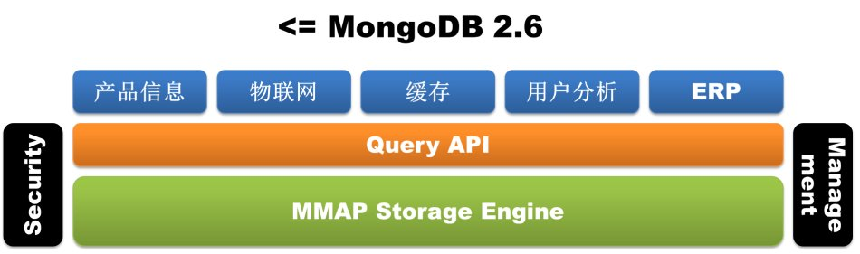
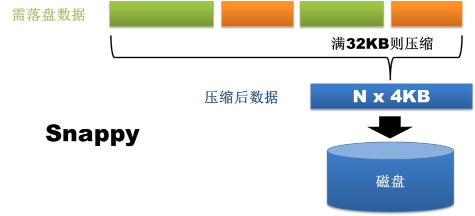
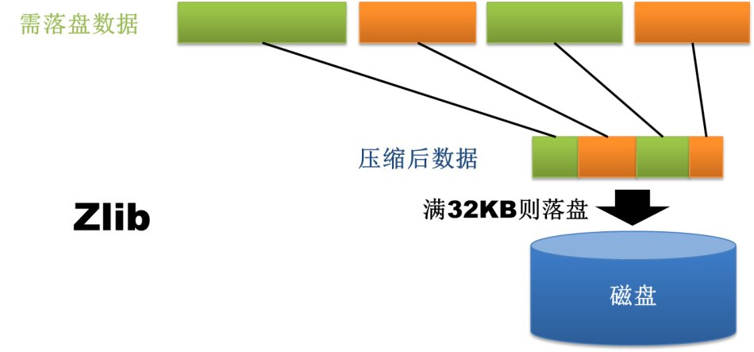

MongoDB は現在IT業界で非常に人気のある非リレーショナルデータベース(NoSql)であり、その柔軟なデータ保存方式は現在のIT従事者に高い評価を受けています。
菜鸟教程もその歩調に追従し、チュートリアルの内容は3.0バージョンまで更新されています。チュートリアルのサンプルは3.0バージョンでテストに合格しています。
以下は3.0バージョンの新機能です：
プラグイン式ストレージエンジンAPI
MongoDB 3.0はプラグイン式ストレージエンジンAPIを導入し、第三者のストレージエンジンベンダーがMongoDBに参入するのを容易にしました。この変更は間違いなくMySQLの設計理念を参考にしています。現在、初期のMMAPストレージエンジンの他に、WiredTigerとRocksDBはいずれもMongoDBのサポートを完了しており、前者はMongoDB社に買収された後、そのままMongoDB 3.0バージョンに導入されました。プラグイン式ストレージエンジンAPIの導入は、MongoDBがより多くの異なるタイプの業務を処理するための武器庫を充実させる無限の可能性を提供し、メモリストレージエンジン、トランザクションストレージエンジン、さらにはHadoopも将来のに接続される可能性があります。


WiredTigerストレージエンジン
プラグイン式ストレージエンジンAPIがMongoDB 3.0に武器庫を整えたとすれば、WiredTigerは間違いなく武器庫の中で最初の、そして最も重要な爆弾です。MMAPストレージエンジン自身の天然の欠点（ディスク領域とメモリ領域を消費し、クリーンアップが困難で、データベースレベルロック）のため、MongoDBはデータベース運用担当者に大きな苦痛をもたらし、一部の人々はすでにTokuMXへ乗り換え始めていました。後者も現時点ではあまり安定していませんが。この問題を認識したMongoDBは、資金力にものを言わせた決断を行い、ストレージエンジンベンダーWiredTigerを直接買収し、WiredTigerストレージエンジンを3.0バージョンに統合しました（64ビット版のみで提供）。では、この脚光を浴びるストレージエンジンには、一体どのような期待に値する特徴があるのでしょうか？
1、ドキュメントレベルの並行制御
WiredTigerはMVCCによりドキュメントレベルの並行制御、すなわちドキュメントレベルのロックを実現しています。これにより、複数のクライアントリクエストが同時に1つのコレクション内の複数のドキュメントを更新でき、データベースレベルの書き込みロックを待つために並んで待つ必要はもうありません。これはデータベースの読み書き性能を向上させると同時に、システムの並行処理能力を大幅に高めます。この点の効果は監視ツールmongostatに直接現れています。旧バージョンの監視指標にはlockeddbという項目がありました（この項目の値が高いことはmongoユーザーにとって大きな悩みの種でした）が、新版のmongostatではもう見られません。

MongoDB 2.4.12版本
$/home/mongodb/mongodb-linux-x86_64-2.4.12/bin/mongostat –port55060 insert query update delete getmore command flushes mapped vsize resfaults locked db idxmiss % qr|qw ar|aw netIn netOut conntime *0 *0 *0 *0 0 1|0 0 18g 18.3g 16.1g 0 ycsb:0.0% 0 0|00|0 62b 2k 1 13:04:01 *0 *0 *0 *0 0 1|0 0 18g 18.3g 16.1g 0 ycsb:0.0% 0 0|00|0 62b 2k 1 13:04:02 *0 *0 *0 *0 0 1|0 0 18g 18.3g 16.1g 0 ycsb:0.0% 0 0|00|0 62b 2k 1 13:04:03
MongoDB 3.0 rc8版本
$/home/mongodb/mongodb-linux-x86_64-3.0.0-rc8/bin/mongostat –port55050 insert query update delete getmore command % dirty % used flushesvsize res qr|qw ar|aw netIn netOut conntime *0 *0 *0 *0 0 1|0 0.0 42.2 0 30.6G 30.4G 0|0 0|0 79b 16k 113:02:38 *0 *0 *0 *0 0 1|0 0.0 42.2 0 30.6G 30.4G 0|0 0|0 79b 16k 113:02:39 *0 *0 *0 *0 0 1|0 0.0 42.2 0 30.6G 30.4G 0|0 0|0 79b 16k 113:02:40
2、ディスクデータ圧縮
WiredTigerはすべてのコレクションとインデックスに対してBlock圧縮とプレフィックス圧縮をサポートしています（データベースがjournalを有効にしている場合、journalファイルも同様に圧縮されます）。サポートされている圧縮オプションには、無圧縮、Snappy圧縮、Zlib圧縮があります。これは多くのMongoユーザーにとってまた一つの福音です。なぜなら多くのMongoデータベースがMMAPストレージエンジンによるディスク領域の過剰消費のため、やむを得ず増設を行っていたからです。Snappy圧縮はデータベースのデフォルトの圧縮方式であり、ユーザーは業務ニーズに応じて適切な圧縮方式を選択できます。理論のには、Snappy圧縮は速度が速く、圧縮率はまずまずで、Zlib圧縮は圧縮率が高く、CPU消費が多く速度がやや遅いです。もちろん、圧縮を使用するだけでMongoはより多くのCPU使用率を消費しますが、Mongo自体がそれほどCPUを消費しないことを考慮すると、圧縮を有効にすることは十分に価値があります。


さらに、WiredTigerのストレージ方式にも大きな改善があります。旧バージョンのMongoはデータベースレベルでファイルを割り当てており、データベース内のすべてのコレクションとインデックスがデータベースファイルに混在して保存されているため、あるコレクションやインデックスを削除しても、占有していたディスク領域はすぐには自動回収されにくいという問題がありました。WiredTigerはコレクションとインデックスのレベルでファイルを割り当てており、データベース内のすべてのコレクションとインデックスは個別のファイルに保存されます。コレクションやインデックスを削除すると、対応するストレージファイルも即座に削除されます。もちろん、ストレージ方式が異なるため、低バージョンのデータベースは直接WiredTigerストレージエンジンにアップグレードできず、エクスポート・インポート方式でのみ実現可能です。
MongoDB 2.4.12版本
[mongodb@mongo-data-emergency-001.m6.momo.com mongodb_2_4_12]$ll drwxrwxr-x 3 mongodb mongodb 4096 2月 25 19:03local -rwxrwxr-x 1 mongodb mongodb 6 2月 25 19:04mongod.lock drwxrwxr-x 2 mongodb mongodb 4096 2月 27 18:30_tmp drwxrwxr-x 3 mongodb mongodb 4096 2月 27 18:39ycsb [mongodb@mongo-data-emergency-001.m6.momo.com mongodb_2_4_12]$ llycsb/ drwxrwxr-x 2 mongodb mongodb 4096 2月 27 18:39_tmp -rw——- 1 mongodb mongodb 67108864 2月 27 18:57ycsb.0 -rw——- 1 mongodb mongodb 134217728 2月 27 18:57ycsb.1 -rw——- 1 mongodb mongodb 2146435072 2月 27 18:57ycsb.10 -rw——- 1 mongodb mongodb 2146435072 2月 27 18:57ycsb.11 -rw——- 1 mongodb mongodb 2146435072 2月 27 18:57ycsb.12 -rw——- 1 mongodb mongodb 2146435072 2月 27 18:39ycsb.13 -rw——- 1 mongodb mongodb 268435456 2月 27 18:57ycsb.2 -rw——- 1 mongodb mongodb 536870912 2月 27 18:57ycsb.3 -rw——- 1 mongodb mongodb 1073741824 2月 27 18:57ycsb.4 -rw——- 1 mongodb mongodb 2146435072 2月 27 18:57ycsb.5 -rw——- 1 mongodb mongodb 2146435072 2月 27 18:57ycsb.6 -rw——- 1 mongodb mongodb 2146435072 2月 27 18:57ycsb.7 -rw——- 1 mongodb mongodb 2146435072 2月 27 18:57ycsb.8 -rw——- 1 mongodb mongodb 2146435072 2月 27 18:57ycsb.9 -rw——- 1 mongodb mongodb 16777216 2月 27 18:40ycsb.ns
[mongodb@mongo-data-emergency-001.m6.momo.com mongodb_3_0_0]$ll drwxrwxr-x 2 mongodb mongodb 4096 2月 28 18:32local -rw-rw-r– 1 mongodb mongodb 36864 3月 21 13:41_mdb_catalog.wt -rwxrwxr-x 1 mongodb mongodb 6 2月 28 18:32mongod.lock -rw-rw-r– 1 mongodb mongodb 36864 3月 21 13:42sizeStorer.wt -rw-rw-r– 1 mongodb mongodb 95 2月 28 18:32storage.bson -rw-rw-r– 1 mongodb mongodb 49 2月 28 18:32WiredTiger -rw-rw-r– 1 mongodb mongodb 433 2月 28 18:32WiredTiger.basecfg -rw-rw-r– 1 mongodb mongodb 21 2月 28 18:32WiredTiger.lock -rw-rw-r– 1 mongodb mongodb 921 3月 21 13:41WiredTiger.turtle -rw-rw-r– 1 mongodb mongodb 53248 3月 21 13:41WiredTiger.wt drwxrwxr-x 2 mongodb mongodb 4096 3月 21 13:41ycsb [mongodb@mongo-data-emergency-001.m6.momo.com mongodb_3_0_0]$ llycsb/ -rw-rw-r– 1 mongodb mongodb 19314257920 2月 2819:16 collection-4–1318477584648278106.wt -rw-rw-r– 1 mongodb mongodb 602112 3月 2113:40 collection-6–1318477584648278106.wt -rw-rw-r– 1 mongodb mongodb 262598656 2月 2818:53 index-5–1318477584648278106.wt -rw-rw-r– 1 mongodb mongodb 827392 3月 2113:40 index-7–1318477584648278106.wt -rw-rw-r– 1 mongodb mongodb 1085440 3月 2113:41 index-8–1318477584648278106.wt
3、設定可能なメモリ使用上限
WiredTigerはメモリ使用容量の設定をサポートしており、ユーザーはstorage.wiredTiger.engineConfig.cacheSizeGBパラメータを通じてMongoDBが使用できる最大メモリを制御できます。このパラメータのデフォルト値は物理メモリサイズの半分です。これも多くのMongoユーザーにとってまた一つの福音です。MMAPストレージエンジンがメモリを消費することで有名であり、データ量が十分に大きければ、まるで使えるだけ使うという感じでした。
MMAPv1ストレージエンジンの改善
MongoDB 3.0はWiredTigerを導入したことに加え、従来のストレージエンジンMMAPに対しても一定の改良を行いました。このストレージエンジンは依然として3.0版のデフォルトストレージエンジンです。残念ながら、改良されたMMAPストレージエンジンは依然としてデータベースレベルでファイルを割り当てており、データベース内のすべてのコレクションとインデックスがデータベースファイルに混在して保存されるため、ディスク領域がすぐに自動回収されない問題は以前のままです。
1. ロック粒度がデータベースレベルロックからコレクションレベルロックに向上
これにより、ある程度データベースの並行処理能力も向上します。
2、ドキュメント空間割り当て方式の変更
MMAPストレージエンジンでは、ドキュメントは書き込み順に並べて格納されます。ドキュメントの更新後に長さが長くなり、元の格納位置の後ろに増加分のデータを置くための十分な領域がない場合、ドキュメントはファイル内の他の位置に移動する必要があります。この更新によるドキュメント位置の移動は、書き込み性能を著しく低下させます。なぜなら、ドキュメントが移動すると、コレクション内のすべてのインデックスがドキュメントの新しい格納位置を同期して更新する必要があるからです。
MMAPストレージエンジンは、このような状況の発生を減らすために、次の2つのドキュメント空間割り当て方式を提供しています。paddingFactor（パディングファクター）に基づく適応の割り当て方式と、usePowerOf2Sizesに基づく事前割り当て方式です。前者がデフォルト方式です。最初の方式は、各コレクションのドキュメント更新履歴に基づいてドキュメント更新の平均増加長さを計算し、新しいドキュメントの挿入時または古いドキュメントの移動時に一部の領域を埋めます。例えば、現在のコレクションのpaddingFactorの値が1.5の場合、サイズが200バイトのドキュメントを挿入するとき、自動的にドキュメントの後ろに100バイト分の領域を埋めます。2番目の方式は更新履歴を考慮せず、ドキュメントに直接2のN乗サイズの格納領域を割り当てます。例えば、同じくサイズが200バイトのドキュメントを挿入する場合、直接256バイトの領域を割り当てます。
MongoDB 3.0バージョンのMMAPv1は、paddingFactorに基づく適応の割り当て方式を廃止しました。この方式は一見スマートに見えますが、コレクション内のドキュメントのサイズがさまざまであるため、パディング後の空間サイズもさまざまになります。コレクションに対する更新操作が多い場合、レコード移動によって生じた空き領域はサイズが異なるため再利用が困難になります。現在では、usePowerOf2Sizesに基づく事前割り当て方式がデフォルトのドキュメント空間割り当て方式となっています。この割り当て方式は、割り当ておよび回収される空間サイズが2のN乗（サイズが2MBを超えると2MBの倍数に増加）になるため、維持と利用が容易です。あるコレクションでinsertまたはin-place updateのみが行われる場合、ユーザーはそのコレクションにnoPaddingフラグを設定することで、空間の事前割り当てを無効にできます。

复制集改进
1、レプリカセットメンバーの増加
MongoDB 3.0のレプリカセットメンバーの最大数は、以前の12個から50個に増加しましたが、投票できるメンバーの最大数は依然として7個です。それに伴い、getLastError の w:"majority" 項目も、投票ノードの過半数を意味するだけです。
2、PrimaryノードのStepDown処理方法の変更
レプリカセット内でreplSetStepDownコマンドにより、現在のPrimaryノードを退位させ、新しいPrimaryノードを再選出できます。MongoDB 3.0はStepDownの処理方法に以下の変更を加えました。1）Primaryノードが退位する前に、まずインデックス作成、書き込み操作、Mapreduceタスクなどの時間のかかるユーザー操作を中断します。2）データのロールバックを防ぐため、Primaryノードは退位前に、選出可能なSecondaryノードが最新データに同期するのを待ちます。旧バージョンでは、PrimaryノードはいずれかのSecondaryノードのデータ同期が10秒以内であれば退位していました。3）同時にreplSetStepDownコマンドに新しいパラメータsecondaryCatchUpPeriodSecsが追加され、ユーザーはPrimaryノードが、指定した秒数以内にデータが同期されたSecondaryノードを待ってから退位するように指定できます。
シャーディングクラスタの改善
1、新しいツール関数 sh.removeTagRange() の追加
旧バージョンではsh.addTagRange()のみが存在し、tagRangeを削除するには手動でconfig.tagsコレクションにアクセスして削除する必要がありました。
2、より予測可能なRead Preference処理の提供
新バージョンでは、mongosインスタンスは読み取り操作を実行する際、接続をレプリカセットメンバーに固定しなくなり、各読み取り操作ごとにReadPreferenceを再評価します。これにより、Read Preferenceを変更したとき、その動作がより予測しやすくなります。
3、chunkマイグレーションにwriteConcern設定を提供
新バージョンでは、バランサーを対象として、moveChunkとcleanupOrphanedというchunk移行に関連する2つのコマンドにwriteConcernパラメータを提供しています。
4、バランサーの状態表示の追加
新バージョンではsh.status()を通じてバランサーの状態情報を確認できます。
其他改动
1、explan関数の最適化
新バージョンのexplain関数は、count、find、group、aggregate、update、removeなどの操作のクエリプラン表示をサポートし、結果はより包括的でより詳細になります。
2、mongodbツールの書き直し
新バージョンでは、mongodbに付属するすべてのツールがGo言語で書き直されており、特にmongodumpとmongorestoreには並列メカニズムが追加されているため、データのエクスポートとインポートを大幅に高速化できます。
3、ログ出力制御
新バージョンではログが異なるモジュールに分割されており、ACCESS、COMMAND、CONTROL、GEO、INDEX、NETWORK、QUERY、REPL、SHARDING、STORAGE、JOURNAL、WRITEなどが含まれます。ユーザーは各モジュールのログレベルを動的に調整できるため、システム問題の診断に間違いなく有利です。
4、インデックス構築の最適化
バックグラウンドインデックス構築中は、データベース削除・テーブル削除・インデックス削除の操作を実行できず、またバックグラウンドインデックス構築プロセスはこれによって自動的に中断されることもありません。さらに、createIndexesコマンドを使用すると複数のインデックスを同時に作成でき、データを1回だけスキャンするため、インデックス構築の効率が向上します。
总结
以上はMongoDB 3.0の主要な機能と変更点の一部のみを列挙したものであり、さらに詳しく知りたい場合はMongoDB 3.0のRelease-Notesを参照してください。全体的に見ると、MongoDB 3.0は多くの驚くべき新機能を提供しており、人々はその将来の発展に一層期待を寄せています。
クリックしてノートを共有
ノートは本記事の内容の拡張である必要があります！
記事投稿は、ここをクリックしてください
注册邀请码获取方式
分享笔记前必须登录！
注册邀请码获取方式